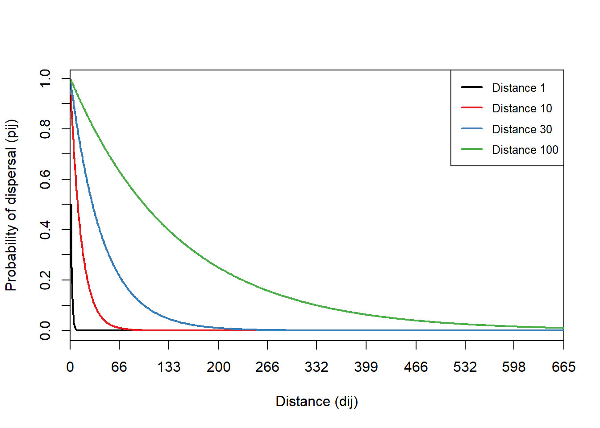
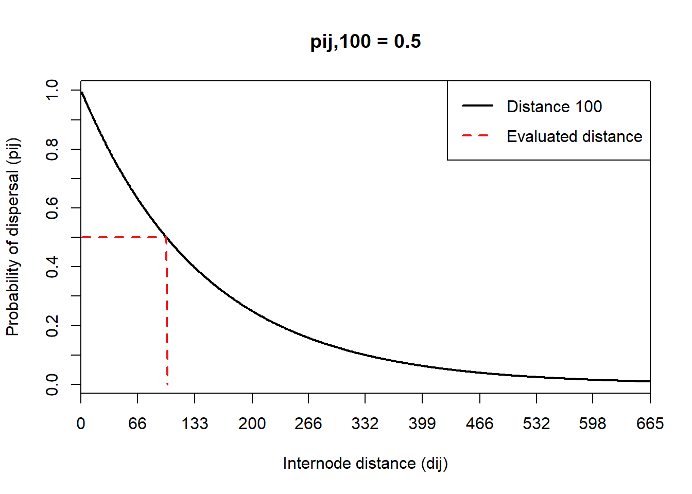
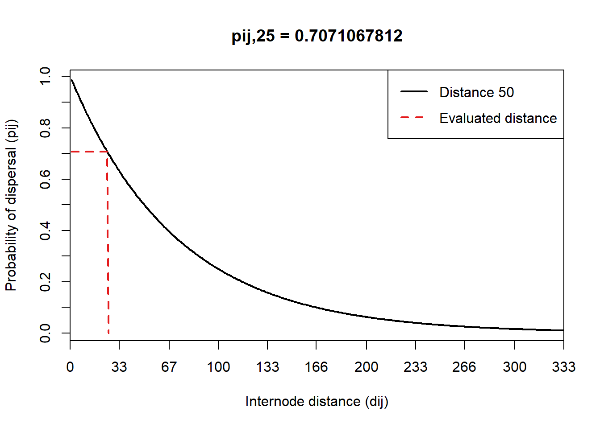

4 Kernel de dispersión
En Makurhini podemos simular las kernel dispersion usando distintas distancias asociadas a medianas de dispersión. Pare ello, usaremos la función probability_distance(). Esta función tiene tres parametros principales:
-
probability. Probabilidad de dispersión en el parámetro median_distance. -
median_distance. Hasta cinco distancias máximas de dispersión en km. -
eval_distance. Calcula la probabilidad de dispersión a una distancia mediana específica (km). Disponible cuando sólo se utiliza una distancia_mediana.
library(Makurhini)
#> Cargando paquete requerido: igraph
#>
#> Adjuntando el paquete: 'igraph'
#> The following objects are masked from 'package:stats':
#>
#> decompose, spectrum
#> The following object is masked from 'package:base':
#>
#> union
#> Cargando paquete requerido: cppRouting
probability_distance(probability= 0.5, median_distance = c(1, 10, 30, 100))
probability_distance(probability= 0.5, median_distance = 100, eval_distance = 100)
#> [1] 0.5
probability_distance(probability= 0.5, median_distance = 50, eval_distance = 25)
#> [1] 0.7071068